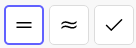

Oppgavesamling i R1
Innhold
CAS
Vi skal nå komme oss dit hvor vi kan løse følgende eksamensoppgave:
Funksjonen \(f\) er gitt ved \[f(x) = 2 \ln (x^2 - 4) - \frac{1}{2} x\]
- a
- Bruk graftegner til å tegne grafen til \(f\) når \(x \in \langle -4, 16 \rangle\).
- b
- Bestem eventuelle topp- og bunnpunkter på grafen til \(f\).
Funksjonen \(g\) er gitt ved \[g(x) = 2\ln (x^2 + k) - \frac{1}{2}x,\quad k>0.\]
- c
- Bruk CAS til å bestemme \(k\) slik at \(g\) har et ekstremalpunkt i \(x-1\).
- d
- Bruk blant annet CAS til å bestemme hvor mange ekstremalpunkt \(g\) har for ulike verdier av \(k\).
Veien dit, leder via CAS som kalkulator og som likningsløser.
Som kalkulator
Aller først, må vi føle oss trygge på at vi klarer å bruke CAS som kalkulator. Da er det i utgangspunktet følgende knapper vi er interessert i:

Her har vi «eksakt utregning»-knappen, «numerisk utregning»-knappen og «behold inntasting»-knappen. Test hva de ulike knappene gjør med følgende beregninger.
| Utregning | Inntasting | Kommentar |
|---|---|---|
| \(2\cdot 2\) | 2 * 2 |
|
| $\frac{1}{2}+3 | 1/2 "hp" + 3 |
"hp" er «høyrepil» på tastaturet |
| \(2 + a + 2a\) | 2 + a + 2 a |
Legg merke til mellomrommet i 2 a |
| \(2 + \lg a\) | 2 + lg(a) |
Legg merke til CAS' håndtering av logaritmer |
Som likningsløser
Videre kan vi bruke CAS til å løse likninger. La oss forsøke å løse likninga \[2x^2 - 5x + 3 = 0.\] Om vi her gyver løs med abc-formelen, får vi \[x = \frac{-(-5) \pm \sqrt{(-5)^2 - 4\cdot 2 \cdot 3}{2 \cdot 2} = 1 \vee \frac{3}{2}.\]
Dette kunne vi sjølsagt også ha løst med CAS som kalkulator, med følgende linjer

Enda enklere blir det om vi skriver likninga direkte inn i CAS, sjekker inntastinga, og velger en av likningsløsningsknappene.

Under taster jeg først inn i likninga i rad en, som så kan refereres til via $1, som jeg så løser eksakt med  -knappen og så numerisk med
-knappen og så numerisk med  -knappen.
-knappen.

Forsøk å løse følgende likninger i CAS:
\[2x^2 - 5 x + c = 0\] \[2x^2 - b x = c\] \[\lg x + 10 = 0\] \[\lg x = x\]
Tenk over hva svarene vil si for de ulike løsningene.
Under vises grafene til de to funksjonene \(f(x) = \lg x\) og \(g(x) = x\). Hva forteller denne oss om forsøket på løsning av den siste likninga over?

Som derivator
For å derivere funksjoner i CAS. Kan vi velge mellom å skrive inn et funksjonsnavn og trykke derivasjonsknappen,  , eller å skrive inn derivasjonstegnet direkte. Se linjene under hvor vi deriverer funksjonen \(h(x) = 3 \ln x\) på to måter:
, eller å skrive inn derivasjonstegnet direkte. Se linjene under hvor vi deriverer funksjonen \(h(x) = 3 \ln x\) på to måter:

Løsning av vår oppgave
Vi er nå et godt stykke på vei for å få løst oppgave vi konkret står overfor.